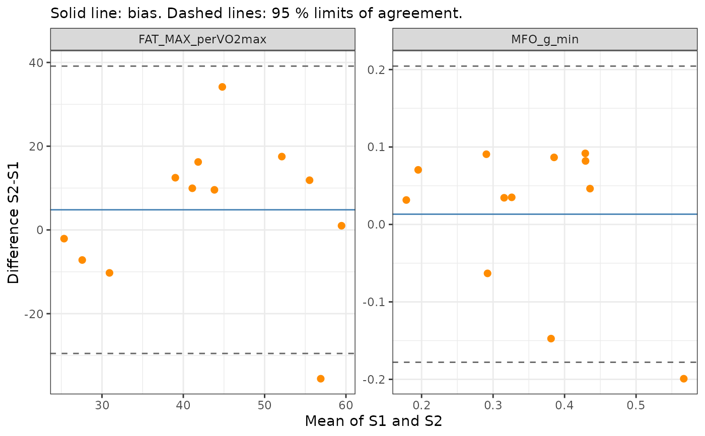

Computes the reliability of MFO, Fatmax and the other outcomes of [MFOs()] from two or more identical tests per participant (SPEC 12): intraclass correlation, standard error of measurement, minimal detectable change, coefficients of variation, systematic bias and limits of agreement.
Arguments
- results
data frame, typically the summary of [MFOs()], with an `ID` column and/or `participant` and `session` columns.
- sessions
optional data frame (or path to a csv file) with `id`, `participant` and `session`.
- variables
columns to analyse. `NULL` (default) uses those of `MFO_g_min`, `MFO_FFM`, `FAT_MAX_perVO2max`, `FAT_MAX_porcHRmax`, `FAT_MAX_load`, `FatMax_zone_lower`, `FatMax_zone_upper`, `d`, `s` and `t` that are present and not all `NA`.
- conf
confidence level of the intervals (default 0.95).
Value
An object of class `MFO_reliability`, a list with:
`table`: one row per variable with `variable`, `n`, `k`, `mean`, `ICC`, `ICC_lower`, `ICC_upper`, `ICC_class`, `SEM`, `MDC95`, `MDC90`, `CV`, `CV_log`;
`pairs`: one row per variable and pair of consecutive sessions with `variable`, `pair`, `n`, `bias`, `bias_lower`, `bias_upper`, `sd_diff`, `LoA_lower`, `LoA_upper`, `hetero_r`, `hetero_p`;
`familiarization`: with k >= 3, one row per variable with `variable`, `n`, `diff` (session 1 minus the mean of the others), `p`, `SEM`, `discard_session1`; otherwise `NULL`;
`data`: the long table used (`participant`, `session`, `variable`, `value`), and `sessions`: the session order.
`plot()` draws the Bland-Altman plots of one pair (see [plot.MFO_reliability()]).
Details
**Participants and sessions.** `results` is the summary of [MFOs()], one row per test. Each row is assigned to a participant and a session from, in this order: columns `participant` and `session` of `results`; the table `sessions` (columns `id`, `participant`, `session`, as the `sessions.csv` written by [write_MFO_sessions()]), matched by `results$ID`; or the `ID` split at its last underscore (`"P01_S1"` is participant `"P01"`, session `"S1"`). Sessions are ordered by their trailing number when they all have one (S1, S2, ..., S10), otherwise by first appearance. For each variable only the participants with a value in every session are used, and a warning gives how many were left out.
**Statistics.** From the two-way ANOVA (participants x sessions) with mean squares MSR (participants), MSC (sessions) and MSE (error), for n participants and k sessions:
ICC(2,1), two-way random effects, absolute agreement, single measure (Shrout & Fleiss 1979; McGraw & Wong 1996, ICC(A,1)): (MSR - MSE) / (MSR + (k - 1) MSE + k (MSC - MSE) / n), with the F-based confidence interval of McGraw & Wong (1996). The interval is checked numerically against `psych::ICC` 2.6.9 (ICC2), which applies their erratum (p. 390); the text of the erratum has not been consulted. It is classified on the lower bound of the interval (Koo & Li 2016): < 0.50 poor, 0.50-0.75 moderate, 0.75-0.90 good, > 0.90 excellent.
SEM = sqrt(MSE), MDC95 = 1.96 sqrt(2) SEM and MDC90 = 1.645 sqrt(2) SEM (Weir 2005); CV = 100 SEM / mean.
CV_log: the SEM of the log-transformed values expressed as a percentage, 100 (exp(SEM_log) - 1), the typical error as a coefficient of variation of Hopkins (2000), for errors proportional to the value. `NA` when a value is not positive (d and t can be negative).
For each pair of consecutive sessions (S2 - S1, S3 - S2, ...): systematic bias (mean difference) with its t confidence interval, and 95 % limits of agreement, bias +/- 1.96 SD of the differences (Bland & Altman 1986). Heteroscedasticity is the Pearson correlation between the absolute difference and the mean of the pair; a significant one (p < 0.05) gives a warning suggesting `CV_log`.
With three sessions or more, familiarization: session 1 against the mean of the others (paired t). Discarding session 1 is recommended when p < 0.05 and the mean difference is larger than the SEM.
At least 3 participants are needed; with fewer than 30 a warning recalls the rule of thumb of Koo & Li (2016): at least 30 heterogeneous participants and, whenever possible, 3 sessions.
Warnings and messages
Every warning and message of this function is a classed condition: `mfo_warning_<id>` and `mfo_warning` (or `mfo_message_<id>` and `mfo_message`), with the numbers of the text as fields (for example `mfo_warning_negative_fat` has `n`, the number of steps). The text is English; the classes let a program, such as [run_app()], handle a given warning or word it in another language: `withCallingHandlers(expr, mfo_warning_negative_fat = function(w) w$n)`.
References
Bland JM, Altman DG (1986). Statistical methods for assessing agreement between two methods of clinical measurement. Lancet 1(8476): 307-310.
Hopkins WG (2000). Measures of reliability in sports medicine and science. Sports Med 30(1): 1-15. doi:10.2165/00007256-200030010-00001
Koo TK, Li MY (2016). A guideline of selecting and reporting intraclass correlation coefficients for reliability research. J Chiropr Med 15: 155-163. doi:10.1016/j.jcm.2016.02.012
McGraw KO, Wong SP (1996). Forming inferences about some intraclass correlation coefficients. Psychol Methods 1(1): 30-46, doi:10.1037/1082-989X.1.1.30 ; correction, p. 390.
Shrout PE, Fleiss JL (1979). Intraclass correlations: uses in assessing rater reliability. Psychol Bull 86(2): 420-428.
Weir JP (2005). Quantifying test-retest reliability using the intraclass correlation coefficient and the SEM. J Strength Cond Res 19: 231-240.
Examples
sim <- simulate_MFO_sessions(n_participants = 12, n_sessions = 2,
population = list(VO2max = c(3000, 500)),
seed = 1)
# One row per test, as MFOs() returns it
results <- do.call(rbind, lapply(seq_len(nrow(sim$truth)), function(i) {
tr <- sim$truth[i, ]
tabs <- sim$data[[tr$id]][[tr$session]]
r <- suppressWarnings(suppressMessages(
MFO(step_time = 20, db_MFO = tabs$db_MFO, db_basal = tabs$db_basal,
db_graded = tabs$db_graded, cv_var = "RER", author = "Frayn",
energy_equivalents = "classic", age = 30)))
data.frame(ID = paste(tr$id, tr$session, sep = "_"), MFO_g_min = r$MFO,
FAT_MAX_perVO2max = r$FAT_MAX)
}))
rel <- suppressWarnings(MFO_reliability(results))
rel
#> <MFO_reliability> 12 participant(s), sessions S1, S2; ICC(2,1) with 95% CI
#> variable n k mean ICC ICC_lower ICC_upper ICC_class SEM
#> MFO_g_min 12 2 0.352 0.682 0.198 0.897 poor 0.069
#> FAT_MAX_perVO2max 12 2 43.200 0.258 -0.337 0.709 poor 12.400
#> MDC95 MDC90 CV CV_log
#> 0.191 0.16 19.6 19.5
#> 34.300 28.80 28.7 31.5
#>
#> Bias and limits of agreement by pair:
#> variable pair n bias bias_lower bias_upper sd_diff LoA_lower
#> MFO_g_min S2-S1 12 0.0132 -0.0487 0.0752 0.0975 -0.178
#> FAT_MAX_perVO2max S2-S1 12 4.8100 -6.3100 15.9000 17.5000 -29.500
#> LoA_upper hetero_r hetero_p
#> 0.204 0.658 0.0201
#> 39.100 0.364 0.2450
plot(rel)
